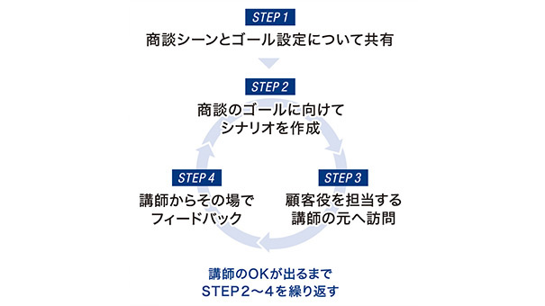
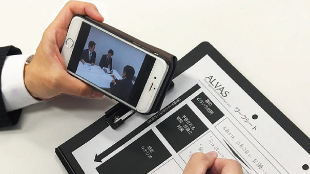
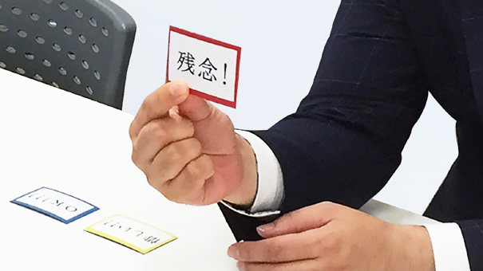
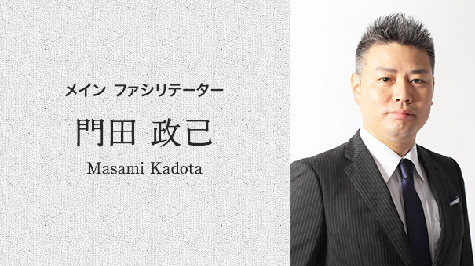
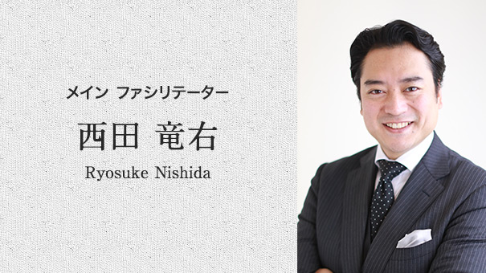
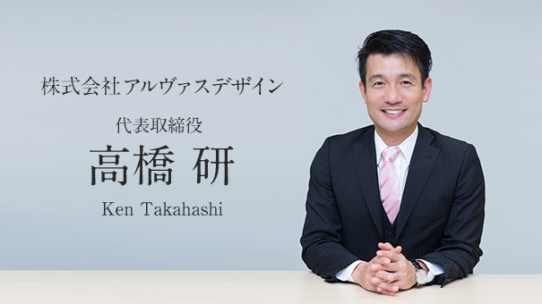

次世代セールスパーソンを育成する超反復型ロールプレイング研修
- 03-4540-1050
- 営業時間 9:00-18:00（土日祝除く）
営業のスタイルは、時代の変化とともに、
「御用聞き」から「提案（問題解決型）」に
変化してきました。
問題解決から、価値創造へと
更なる変化が求められ始めています。
産業の発展だけではなく、
暮らしや文化を支える
新しいサービスを
生み出す企業価値を現場で自ら考え、
創り出せる営業人材を育てるために
デザインされたのが本研修です。
The reason of the choosingロールプレイング研修が"選ばれる"5つの理由
-

-
１：現場実践を可能にする
徹底した反復練習関係構築が出来ていないお客様役を講師が演じ、手強い「壁」となり、営業が行き詰まりやすい状況を作ります。
営業目線では壁を突破できず、「お客様にとっての価値」を示す顧客目線でないと、先へ進めない設計をもった実践型演習です。壁を突破するまでの間、4つのステップによるPDCAサイクルを通して反復経験を積むことで、短時間で実践に役立つアプローチ力が身につきます。
-
２：起用する講師は
研修のプロではなく営業のプロ講師は研修のプロでは無く「営業のプロ」を起用しています。講師がお客様役を演じ、リアリティのあるロールプレイングが演出可能です。
ロールプレイング後には、講師から受講生一人一人にフィードバックを行います。営業のプロである講師から、より実践で役立つ納得度の高いフィードバックを行い、受講生の実践力を高めます。 -
２：起用する講師は
研修のプロではなく営業のプロ講師は研修のプロでは無く「営業のプロ」を起用しています。講師がお客様役を演じ、リアリティのあるロールプレイングが演出可能です。
ロールプレイング後には、講師から受講生一人一人にフィードバックを行います。営業のプロである講師から、より実践で役立つ納得度の高いフィードバックを行い、受講生の実践力を高めます。
-
３：リアルな現場を想定し
企業特性を組み込んだシチュエーション１ヶ月以上かけて企業特性を分析し、オリジナルのケースを作成します。その為、より実務と連動性の高いリアルな現場を再現したロールプレイングが実施可能です。
受講生にとって、明日から現場でそのまま活かす事が可能な力が身に付きます。
-

４：積極性を高め振り返りを
深めるゲーミフィケーションロールプレイングにゲーム性を持たせています。 ペアワーク、チーム制などの工夫を持たせる事で、受講生のロールプレイングに対する自主性、積極性が増すように設計されています。
結果的に、一回一回での振り返りが深まり、学習効果を高めています。 -
４：積極性を高め振り返りを
深めるゲーミフィケーションロールプレイングにゲーム性を持たせています。 ペアワーク、チーム制などの工夫を持たせる事で、受講生のロールプレイングに対する自主性、積極性が増すように設計されています。
結果的に、一回一回での振り返りが深まり、学習効果を高めています。
-

-
５：自発的な変化を促す
映像を使用した振り返りロールプレイングの状況を映像で振り返ります。
受講生自身が自分の振る舞いを映像を通し客観的に見る事で、変化の必要性を自覚する事が可能です。研修の中で、主体的に改善を行おうという積極性が生まれ、研修内で行動変容が生まれます。
従来の研修は座学的な要素が強いため、
提案スキルを頭で理解するものの、
クライアントの特性や現場の状況、
想定外の反応に直面した場合など、
期待するパフォーマンスが発揮されないケースが少なくありません。
本研修は、科学的手法も取り入れ、
行動変容を重視し
短時間に何度も反復するロールプレイング方式により、
研修中にスキルが身につき、
現場でも無意識に実践できる設計となっています。
Training Effects研修効果の違いを知る
＜効果検証元＞
●日本経済新聞社『成功する練習の法則』（ダグ・レモフ著）
●脳科学（反復による技化）
●大脳生理学
●心理学（決定疲労、自我消耗）
●心理学（ハロー効果）
Training Lecturer研修講師のご紹介
-

メインファシリテーター：門田 政己
1997年 建築会社入社。コンサルティングと企画提案営業に従事する。2001年 リクルートへ転職。新規事業の立上げを中心に営業と組織マネジメントを行い、全国MVPなど多数を受賞。2007年 MONcompanyを創業（2010年 MON株式会社設立）。現在は、「持続可能な人と組織の成長」をテーマにOFFJTやOJTを実施している。
また、日々の実務から得られた実例を汎用的に情報発信することにも努めており、今までに執筆・研究・公表してきたものは80件以上にのぼる。近年では中小企業庁や経済産業局の企業調査も担当している。 -

メインファシリテーター：西田 竜右
2000年、不動産会社へ入社。法人営業部にて外資系企業TOPとの商談に従事。2001年、テレマーケティング会社に入社。3カ月でTOPセールスとなる。その後、マネージャーとしてメンバー育成と同時に自らも37カ月連続TOPセールスを記録。
2005年、営業コンサルティング会社入社。セールスプロモーションを中心に新規事業の企画・営業に従事。2008年、営業企画コンサルティング、アルモデザイン設立。現在、研修講師、ストレングスコーチ、営業コンサルタントとして、様々な業界で幅広く活動中。
Messageメッセージ 〜 経営企画／人事ご担当者様へ
-
営業社員向け研修の本質を追求したプログラム。
これが、弊社の『ロールプレイング研修』です。近年、人材育成のための研修が様々な企業で取り入れられてきています。しかし、その多くは座学や気づきを得る「場」にすぎず、特に営業社員に向けた研修は、得たものを現場で効果的に発揮する力を育てるまでには至らないことが多いのも現状です。
そこで、弊社の提供する営業社員向けの研修では、「鍛え経験を積む場」になる方法論とノウハウを元にしたシュミレーションを通して、現場での力を育てるだけでなく、クライアントへのアプローチから、顧客理解力、提案力、価格交渉力の育成まで、営業社員がクライアントの企業価値を引き出す、プロデューサー的存在になれるプログラムを用意しています。 -

Copyright © 2014-2016 株式会社アルヴァスデザイン All rights reserved.